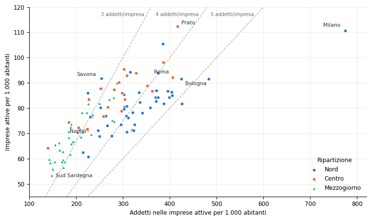

Densità di imprese e propensione imprenditoriale
Una verifica sulle province italiane del rapporto fra imprese attive e abitanti
Paolo Volterra ![]()
Italiano. Uno studio provinciale pubblicato nel 2026 denomina «tasso di imprenditorialità» il numero di imprese attive per mille abitanti e lo interpreta come misura della diffusione della voglia e della possibilità di intraprendere. Questa nota verifica tale interpretazione con un criterio esplicito: se il rapporto misura la propensione imprenditoriale, deve variare fra territori insieme alle manifestazioni osservabili del fenomeno che le statistiche ufficiali registrano, cioè la nascita di nuove imprese, la nascita di imprese con dipendenti e la loro sopravvivenza. Il confronto con la demografia d’impresa Eurostat per le 107 province italiane mostra che la densità di imprese è associata debolmente alle nascite per abitante, non è associata alle nascite di imprese con dipendenti ed è associata negativamente al tasso di natalità. È invece associata alla sopravvivenza delle imprese e, in misura molto più stretta, al numero di addetti nelle imprese per abitante. Il rapporto descrive quindi la consistenza e la longevità del tessuto produttivo più che l’ingresso di nuovi imprenditori. Le verifiche numeriche sulle tabelle dello studio sono riportate in appendice.
English. A provincial study published in 2026 labels the number of active enterprises per thousand inhabitants an “entrepreneurship rate” and reads it as a measure of how widely the willingness and opportunity to start a business are distributed. This note tests that reading against an explicit criterion: if the ratio measures entrepreneurial propensity, it should vary across territories together with the observable manifestations of the phenomenon recorded by official statistics, namely enterprise births, births of employer enterprises and their survival. A comparison with Eurostat business demography for the 107 Italian provinces shows that enterprise density is weakly associated with births per inhabitant, unrelated to births of employer enterprises and negatively associated with the birth rate. It is associated instead with enterprise survival and, much more closely, with employment in enterprises per inhabitant. The ratio therefore describes the size and longevity of the productive fabric rather than the entry of new entrepreneurs. Numerical checks on the study’s tables are reported in the appendix.
imprenditorialità, demografia d’impresa, natalità delle imprese, imprese attive, province, validità, Eurostat, ISTAT, CNA
1 Oggetto della verifica
Nel luglio 2026 l’Area Studi e Ricerche della CNA ha pubblicato un’analisi della distribuzione provinciale di imprese e addetti [1]. Lo studio definisce «tasso di imprenditorialità» il numero di imprese attive ogni mille abitanti e lo considera l’indicatore forse più appropriato per rappresentare la propensione imprenditoriale di un territorio. La motivazione è che le imprese con meno di dieci addetti sono la grande maggioranza, per cui il rapporto rappresenterebbe quanto la voglia e la possibilità di intraprendere sono diffuse nella popolazione. La graduatoria è stata ripresa da altri operatori, che presentano Prato, Milano e Rimini come le province con maggiore propensione imprenditoriale [2].
La proposta contiene due passaggi. Il primo è descrittivo: dividere le imprese per i residenti permette di confrontare territori di dimensione diversa. Il secondo è interpretativo: le differenze nel rapporto vengono attribuite a una diversa propensione a intraprendere. Questa nota riguarda il secondo passaggio. Lo studio non ignora l’eterogeneità dei territori, che anzi discute richiamando distretti, turismo, grandi imprese, impiego pubblico, agricoltura, demografia, credito e burocrazia. La domanda è se un solo rapporto di stock possa sintetizzare questi fattori e rappresentarli come propensione imprenditoriale.
2 Il quadro ufficiale di misurazione
L’ISTAT misura l’imprenditorialità secondo l’Entrepreneurship Indicators Programme dell’OCSE e di Eurostat [3]. In questo quadro l’imprenditorialità è la ricerca di creazione di valore attraverso la nascita o l’espansione di un’attività economica, l’introduzione di prodotti e processi e l’accesso a nuovi mercati. Gli indicatori sono ordinati in tre categorie.
| Categoria | Domanda | Principali misure |
|---|---|---|
| Determinanti | Quali condizioni favoriscono o frenano l’attività imprenditoriale? | Regolazione, mercato, credito, ricerca e sviluppo, capacità e cultura imprenditoriali |
| Performance | Quali processi e risultati caratterizzano le imprese? | Natalità, mortalità, turnover, sopravvivenza, imprese ad alta crescita |
| Impatto | Quali effetti produce l’attività imprenditoriale? | Occupazione, crescita economica e altri risultati sociali |
In parole semplici: l’imprenditorialità non si misura con un solo conteggio. Il quadro ufficiale separa le condizioni che la rendono possibile, ciò che accade alle imprese e gli effetti che ne derivano.
Le statistiche di demografia d’impresa usano la popolazione delle imprese attive come base e calcolano su di essa le nascite e le cessazioni effettive, la sopravvivenza fino a cinque anni, le imprese ad alta crescita e la loro occupazione [4]. Le nascite escludono fusioni, scorpori e altre trasformazioni di imprese già esistenti. Ai fini dell’imprenditorialità, l’ISTAT considera più significativo il tasso di natalità delle imprese con dipendenti di quello calcolato su tutte le imprese [3]. Anche il numero di imprese per mille abitanti è una statistica ufficiale, ma l’ISTAT lo pubblica con una denominazione descrittiva, fra gli indicatori di struttura produttiva [5].
3 Verifica dell’interpretazione
3.1 Criterio
Un rapporto descrittivo può essere usato come misura di un fenomeno non osservabile direttamente, come la propensione a intraprendere, se varia coerentemente con le manifestazioni osservabili di quel fenomeno. Nel quadro ufficiale le manifestazioni più vicine alla decisione di intraprendere sono la nascita di nuove imprese, la nascita di imprese che assumono dipendenti e la sopravvivenza delle imprese nate. Se il numero di imprese per mille abitanti misura la propensione imprenditoriale, le province con il rapporto più alto dovrebbero avere anche più nascite per abitante, più nascite di imprese con dipendenti e un tasso di natalità almeno non inferiore.
3.2 Confronto con la demografia d’impresa
Eurostat pubblica la demografia d’impresa per provincia fino al 2020, con lo stesso campo di attività del registro statistico delle imprese attive: industria, costruzioni e servizi, escluse le società di partecipazione [6]. Il confronto usa il 2019, ultimo anno prima della pandemia, e la popolazione residente al 1° gennaio dello stesso anno [7]. La graduatoria provinciale della densità di imprese nel 2019 coincide quasi con quella pubblicata nello studio per il 2024: la correlazione di rango fra le due è 0,97. I risultati che seguono valgono quindi anche per la graduatoria dello studio.
| Misura | 2019 (107 province) | 2018 (102 province) |
|---|---|---|
| Nascite di imprese per 1.000 abitanti | 0,32 | 0,39 |
| Nascite di imprese con dipendenti per 1.000 abitanti | −0,10 | −0,12 |
| Tasso di natalità (nascite su imprese attive, %) | −0,52 | −0,55 |
| Quota di nascite con dipendenti (%) | −0,39 | −0,39 |
| Sopravvivenza a tre anni (%) | 0,41 | — |
| Addetti nelle imprese per 1.000 abitanti | 0,82 | 0,81 |
| Addetti per impresa | 0,58 | 0,57 |
In parole semplici: un valore vicino a 1 indica che le province con più imprese per abitante sono anche quelle con il valore più alto della misura; un valore vicino a zero indica nessun legame; un valore negativo indica un legame opposto. La densità di imprese va insieme agli addetti e alla sopravvivenza, molto meno alle nascite.
Le nascite di imprese per abitante sono associate solo debolmente alla densità (0,32). Le nascite di imprese con dipendenti per abitante, che l’ISTAT considera la misura più significativa, non sono associate alla densità (−0,10). Il tasso di natalità, cioè le nascite in rapporto alle imprese attive, è più basso dove la densità è più alta (−0,52). Questa relazione è in parte meccanica, perché lo stock di imprese compare al denominatore del tasso; proprio per questo il confronto più pulito è quello con le nascite per abitante, che resta debole.
Le associazioni più strette riguardano due misure diverse dall’ingresso di nuovi imprenditori. La densità cresce con la sopravvivenza a tre anni delle imprese nate (0,41) e soprattutto con gli addetti nelle imprese per abitante (0,82). Le stesse relazioni si ritrovano nel 2018, con differenze di pochi centesimi; la Sardegna è esclusa da quel controllo e dalla sopravvivenza perché la serie con le province attuali inizia nel 2019.
| Classe di densità | Imprese per 1.000 ab. | Nascite per 1.000 ab. | Nascite con dipendenti per 1.000 ab. | Tasso di natalità (%) | Sopravvivenza a tre anni (%) | Addetti per 1.000 ab. |
|---|---|---|---|---|---|---|
| 1° (meno dense) | 56,5 | 4,91 | 1,19 | 8,9 | 54,8 | 146 |
| 2° | 65,1 | 4,98 | 1,22 | 7,7 | 57,9 | 191 |
| 3° | 70,7 | 4,46 | 0,84 | 6,4 | 59,7 | 270 |
| 4° | 77,0 | 4,94 | 0,96 | 6,3 | 58,7 | 322 |
| 5° (più dense) | 83,9 | 5,49 | 1,11 | 6,6 | 58,4 | 340 |
In parole semplici: passando dalle province con meno imprese per abitante a quelle con più imprese, le nascite per abitante restano quasi uguali e quelle di imprese con dipendenti non aumentano; aumentano invece gli addetti e, in misura minore, la quota di imprese che sopravvivono.
Nelle province del gruppo meno denso nascono in mediana 4,91 imprese ogni mille abitanti, in quelle del gruppo più denso 5,49. Le nascite di imprese con dipendenti sono 1,19 e 1,11. Gli addetti nelle imprese passano invece da 146 a 340 ogni mille abitanti. Le differenze di densità fra province non corrispondono quindi a differenze nell’ingresso di nuove imprese, ma alla quantità di attività economica accumulata e alla durata delle imprese esistenti.
3.3 Che cosa misura il rapporto
Il risultato è coerente con la natura del rapporto. Le imprese attive in un anno sono uno stock formato da imprese nate in anni diversi; il loro numero dipende dalle nascite passate, dalle cessazioni e dalla sopravvivenza. Due territori con lo stesso numero di imprese per abitante possono avere dinamiche opposte: molte nascite e molte cessazioni nel primo, poche nascite e imprese longeve nel secondo.
Il rapporto può inoltre essere scritto come quoziente fra due grandezze:
\[\frac{\text{imprese}}{\text{residenti}} = \frac{\text{addetti}/\text{residenti}} {\text{addetti}/\text{imprese}}.\]
Il numeratore misura quanto lavoro si svolge nelle imprese rispetto alla popolazione; il denominatore è la dimensione media delle imprese. Lo stesso valore del rapporto può quindi derivare da molta occupazione distribuita in imprese medie o da poca occupazione distribuita in imprese molto piccole. Con i dati dello studio, la correlazione di rango del rapporto con gli addetti per abitante è 0,80, quella con la dimensione media 0,51.

In parole semplici: salire nel grafico significa avere più imprese rispetto ai residenti, spostarsi a destra significa avere più addetti nelle imprese. Province alla stessa altezza possono arrivarci con quantità di lavoro e dimensioni medie molto diverse.
Savona e Bologna hanno quasi lo stesso rapporto, 91,7 e 91,6 imprese ogni mille abitanti. A Savona gli addetti nelle imprese sono 254 ogni mille abitanti e la dimensione media è 2,8 addetti; a Bologna sono 425 e 4,6. Lo stesso valore del rapporto descrive due strutture produttive diverse.
3.4 Denominatore e localizzazione
La popolazione residente non coincide sempre con la popolazione servita dalle imprese del territorio. Nelle località turistiche la domanda viene anche da visitatori non residenti, nelle aree metropolitane da pendolari, e la quota di popolazione in età di lavoro varia fra territori. Le imprese sono inoltre attribuite alla provincia della sede, mentre i loro addetti possono lavorare in unità locali situate altrove; per questo l’ISTAT tratta separatamente imprese, unità locali e attrattività dei territori [3]. Questi elementi non tolgono valore descrittivo al rapporto, ma ne limitano ulteriormente la lettura come comportamento dei residenti.
4 Misure adatte a domande diverse
| Domanda | Misura pertinente |
|---|---|
| Quante imprese ci sono rispetto alla popolazione? | Imprese attive per 1.000 abitanti |
| Quante nuove iniziative nascono? | Nascite per abitante e tasso di natalità, distinguendo le imprese con dipendenti |
| Quanto durano? | Sopravvivenza a tre e cinque anni |
| Quante crescono e creano lavoro? | Addetti delle nuove imprese, imprese ad alta crescita |
| Chi intraprende? | Caratteristiche degli imprenditori, forme giuridiche |
| Quali condizioni favoriscono l’attività? | Credito, regolazione, mercato, competenze, ricerca |
In parole semplici: ogni domanda richiede la sua misura. Il numero di imprese per abitante risponde alla prima; la propensione a intraprendere si osserva soprattutto nelle nascite, nella sopravvivenza e nella crescita delle nuove imprese.
Un indicatore composito di propensione imprenditoriale è possibile, ma richiede una definizione esplicita, la scelta motivata delle componenti, regole di ponderazione e una verifica rispetto a esiti osservabili. Il rapporto ISTAT sulla competitività del 2020 segue questo procedimento per la reattività delle imprese: la definisce, la stima sulle singole imprese e solo dopo la aggrega per settori e territori [8].
5 Conclusioni
Il numero di imprese attive per mille abitanti è una misura utile della consistenza del tessuto produttivo. Applicato alle province italiane, non supera però il criterio minimo per essere letto come propensione imprenditoriale: è associato debolmente alle nascite di imprese per abitante, non è associato alle nascite di imprese con dipendenti ed è associato negativamente al tasso di natalità. Va insieme, invece, agli addetti nelle imprese per abitante e alla sopravvivenza delle imprese, cioè alla quantità e alla durata dell’attività economica già presente.
La denominazione più corretta è «imprese attive per mille abitanti» o «densità di imprese». Per parlare di propensione imprenditoriale servono le misure di demografia d’impresa che la statistica ufficiale già produce per provincia.
6 Appendice: verifiche sulle tabelle dello studio
Le verifiche che seguono riguardano la coerenza interna dei dati pubblicati e non incidono sulla valutazione precedente.
6.1 Ricostruzione della graduatoria
Dividendo le imprese attive 2024 riportate nello studio per la popolazione residente al 1° gennaio 2024 si ottiene lo stesso valore, al decimale, per 106 province su 107 e un dato nazionale di 80,6 [7]. L’unica eccezione è Cremona: la tabella 2 riporta 87,4, mentre imprese e residenti pubblicati implicano 68,8.
6.2 Valori citati nel testo per le grandi città
| Provincia | Testo dello studio | Tabella 2 | Ricalcolo | Posizione |
|---|---|---|---|---|
| Milano | 106,4 | 110,6 | 110,6 | 2ª |
| Firenze | 96,6 | 98,2 | 98,2 | 4ª |
| Roma | 88,7 | 92,1 | 92,1 | 10ª |
| Napoli | 66,7 | 69,7 | 69,7 | 82ª |
| Palermo | 57,5 | 59,6 | 59,6 | 100ª |
In parole semplici: per cinque grandi città i valori scritti nel commento non coincidono con la tabella. Il ricalcolo con la popolazione ufficiale conferma i valori della tabella.
6.3 Unità territoriali a «doppia crescita»
Lo studio indica 17 province sopra la media nazionale sia per crescita delle imprese sia per crescita degli addetti fra il 2014 e il 2024, mentre l’elenco ne contiene 21. Per Taranto la crescita degli addetti e la media nazionale sono pubblicate entrambe come +17,2%: con i valori arrotondati non si può stabilire se la prima sia superiore. La Sardegna, presentata come aggregato regionale, supera entrambe le soglie ma non compare nell’elenco.
| Gruppo | Testo | Elenco pubblicato | Ricalcolo |
|---|---|---|---|
| Imprese e addetti sopra la media | 17 | 21 (con Taranto, senza Sardegna) | 21 (20 province e Sardegna) |
| Solo imprese sopra la media | 4 | 4 | 4 |
| Solo addetti sopra la media | 6 | 6 | 6 |
| Imprese sopra la media, addetti uguali alla media pubblicata | — | — | 1 (Taranto) |
| Entrambi sotto la media | 71 | — | 71 |
In parole semplici: testo, elenco e ricalcolo danno numeri diversi di territori. Il caso di Taranto non si può decidere con i valori arrotondati.
Riferimenti
Nota metodologica
Questo documento nasce dall’interazione di tre componenti. L’autore definisce le domande, esercita il giudizio critico e assume la responsabilità scientifica ed editoriale del risultato. Strumenti di intelligenza artificiale generativa sono impiegati a supporto della ricerca bibliografica, della lettura, della sintesi, della riorganizzazione argomentativa e della revisione del testo. Un’infrastruttura open source sviluppata dall’autore automatizza il reperimento, l’armonizzazione e il controllo dei dati dalle fonti statistiche ufficiali, e mantiene l’elaborazione documentata e riproducibile.
Le fonti sono pubblicamente accessibili e citate con la loro denominazione ufficiale; l’analisi è pertanto integralmente auditabile e replicabile da terzi a partire da esse. Le tabelle e i grafici sono elaborazioni dell’autore: calcoli, aggregazioni, trasformazioni e scelte di rappresentazione sono attribuibili all’autore e non agli enti produttori dei dati.
La responsabilità per le fonti utilizzate, le analisi condotte, le elaborazioni effettuate, le interpretazioni proposte e le conclusioni formulate resta interamente in capo all’autore. L’intelligenza artificiale è stata impiegata come ambiente di supporto cognitivo ed editoriale, non come fonte primaria, autore autonomo o sostituto del giudizio critico.